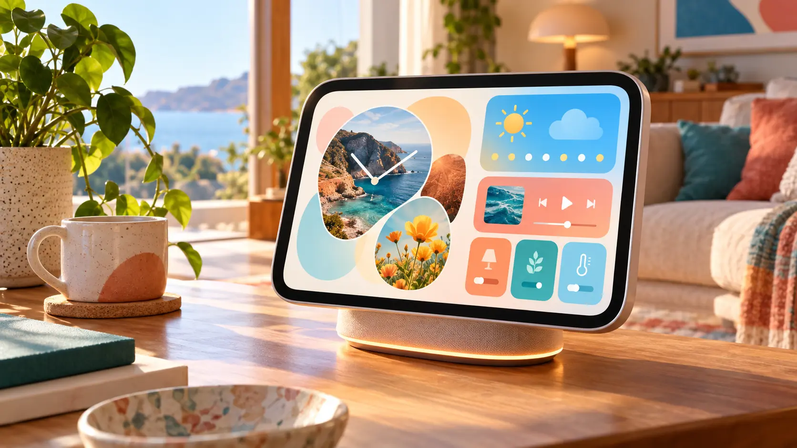
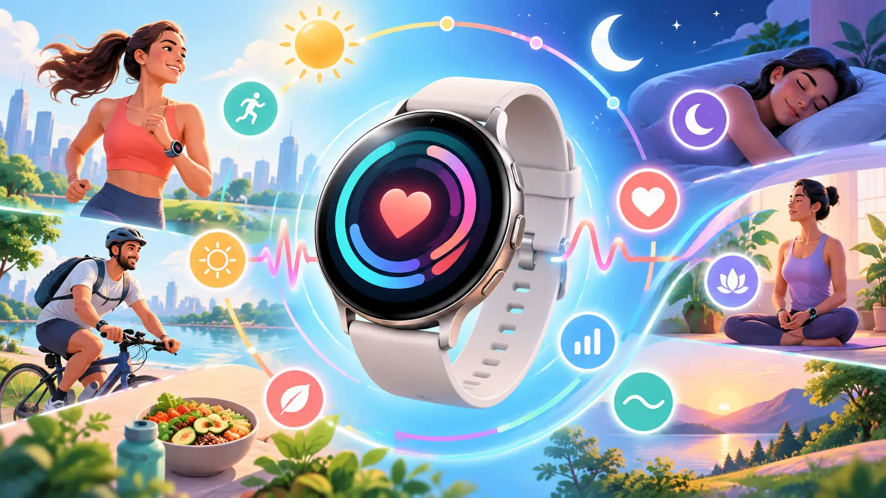

· 2 min read
Logitech gives Googlebook’s mouse and keyboard controls a desktop upgrade
Logi Options+ arrives with button remapping, firmware updates, scrolling controls, and support for Googlebook’s Magic Pointer.
Read reportTechnology by Iian Kehn
Phones, computers, software, and the platforms behind them.
· 2 min read
Logi Options+ arrives with button remapping, firmware updates, scrolling controls, and support for Googlebook’s Magic Pointer.
Read report· 2 min read
The confirmed event points toward Apple’s next smart-home chapter, with a new TV box, display, and compact speaker widely expected.
Read report· 2 min read
SynthID Detector can inspect images, video, and audio for invisible marks from Google and participating AI companies.
Read report· 2 min read
Google’s latest Android 17 maintenance release also addresses 34 security issues across supported Pixel phones, Fold, and Tablet.
Read report· 2 min read
The prequel arrives on Xbox, PC, and Game Pass with three-player campaign co-op, crossplay, and a new 12-player Horde mode.
Read report· 3 min read
The revived desktop moves to 64-bit Debian Trixie, adopts Raspberry Pi’s newest interface, and adds Raspberry Pi Connect.
Read report· 3 min read
Google’s Android-based laptop platform can run both kinds of software, but early limits make it less flexible than Chromebook.
Read report· 2 min read
New gesture references in Safari, Notes, and Quick Look could support both better Sidecar control and future touch-enabled Macs.
Read report
· 3 min read
A reported October launch would bring Apple’s widgets, apps, and voice assistant together on a new smart-home display.
Read report· 3 min read
Five built-in Mac apps still depend on a connection Microsoft has begun turning off for work and school accounts.
Read report· 3 min read
A unified app is bringing Office, coding, and autonomous agents into one interface as Microsoft resets its workplace AI pitch.
Read report· 2 min read
The ID.Tiguan will replace the ID.4 with a familiar name, conventional controls, and a United States release planned for later.
Read report· 2 min read
Localization strings reveal possible camera, smart-home, art, and Snoopy experiences Apple has not announced.
Read report· 2 min read
ClickFix attacks persuade users to paste malicious commands into Terminal, bypassing the protections that normally inspect unfamiliar apps.
Read report· 2 min read
Administrators can now automatically stop identified external bots in the meeting lobby before they become an unnoticed attendee.
Read report· 2 min read
Code references point to an A19 chip, more memory, and faster connectivity for Apple’s most affordable tablet.
Read report· 2 min read
Blackmagic Camera and Moment Pro Camera II expose ten settings across hardware Apple’s own Camera app limits to four.
Read report· 4 min read
Independent evaluators are taking a larger role as advanced models become harder to test, monitor, and contain.
Read report· 3 min read
Microsoft’s automatic, NPU-powered Super Resolution feature is expanding beyond Snapdragon hardware.
Read report· 3 min read
OWC’s latest release brings RAID 6 options, cross-platform improvements, and some important limits.
Read report
· 4 min read
Series 12 and Ultra 4 keep familiar forms while collecting more frequent heart data and adding readiness insights.
Read report· 2 min read
A San Francisco event will bring Microsoft and NVIDIA leaders together around the next chapter of the PC.
Read report· 4 min read
A variable-aperture camera leads a Pro generation built around deliberate photography, sustained performance, and longer battery life.
Read report· 5 min read
Apple’s first folding iPhone combines a pocketable outer screen, its largest iPhone display, and an iOS experience made for two surfaces.
Read report